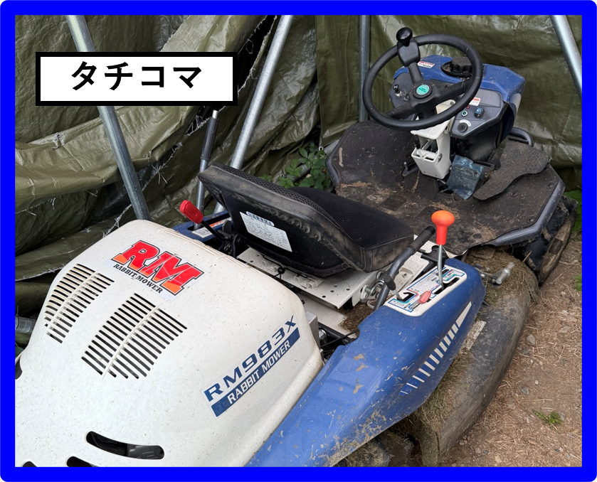
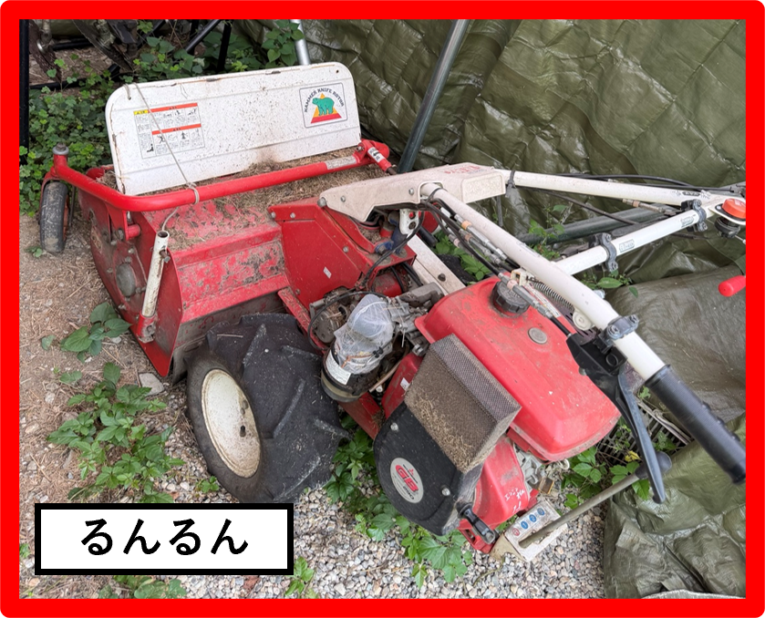
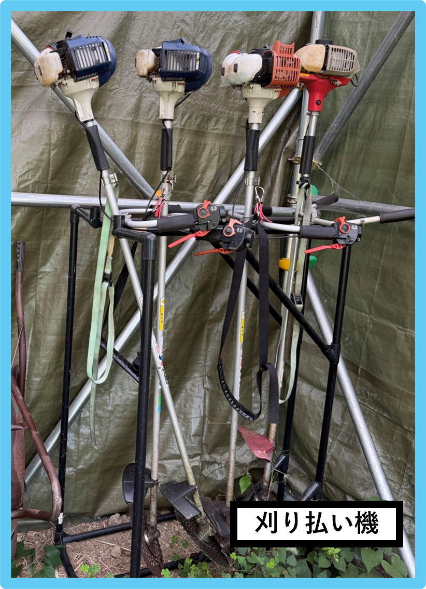

使う機械の写真をタップすると、基本の操作手順を確認できます。
3機種共通の安全ルール 必ず見る
- 草刈機は音が大きく、刃や飛散物の危険がある機械です。誰かが作業しているときは、安易に近づかない。
- 作業者に伝えたいことがある場合は、十分離れた前方の見える位置へ移動し、手を大きく振って気付いてもらう。
- 気付いた作業者は、いったん移動を止め、刃を停止し、スロットルを下げてからコミュニケーションを取る。
- 刃が回っている状態では、人に近づいたり会話したりしない。
- 作業時は長袖・長ズボン・ゴーグル（またはサングラス）・手袋・長靴を着用し、必要に応じて耳栓も使用する。
- 振動障害の予防のため、長時間続けて作業せず、適宜休憩を入れる。
- 特に草の高い場所では、ハチ・マムシなどにも注意する。
- 危ないと感じたら無理をせず、その日の作業を終了する。
使い分け
広い場所はタチコマ、タチコマより小回りが必要な場所はるんるん、斜面や物の近くは手刈りを使います。
広い場所はタチコマ、タチコマより小回りが必要な場所はるんるん、斜面や物の近くは手刈りを使います。

タチコマ乗用草刈機｜ランディング全般・広い場所
›
タチコマ乗用草刈機｜ランディング全般・広い場所
›
準備
画像をタップすると拡大できます
- キーボックスのキーを使用する。
- 右手側のアクセルレバーが中央（ニュートラル）にあることを確認する。
- 右手側のスロットルはLowにする。手前2つのレバーは触らない。
- 左手側のレバーは両方手前にあることを確認する。
始動
ブレーキを強く踏む → キーをひねる → 必要ならチョーク → エンジン始動 → スロットルをHigh
エンジンがかかりにくいときは、チョークを引いてキーをひねります。エンジンがかかった、またはかかりそうならチョークを戻します。
移動
足元のアクセルペダル、または右手側のアクセルレバーで前進・後退できます。2つは連動しています。
最初はいつでも止まれるようブレーキペダルに足を置き、右手のアクセルレバーで前進・後退の練習をします。
小回りはきかないため、旋回半径を意識します。刃が止まっていてもワイヤーの上は絶対にまたがない。
草刈り
- 停車時に、左手側の黒いレバーを親指でボタンを押しながら前に倒し、刃の高さを決める。基本は80mm〜60mmくらい。
- 停車時に、左手側の赤いレバーを前に倒すと刃が回転する。刃の操作はどちらも停車時に行う。
- アクセルを操作して移動しながら刈る。
- 刈った草は右側に排出されるため、再び巻き込まないよう基本は左回りで刈る。
停止
停車 → スロットルをLow → 回転数が落ちるのを待つ → 赤レバーをゆっくり戻して刃を停止 → 刃が止まったら黒レバーを戻す → キーでエンジン停止 → キーをボックスへ戻す
高速回転のまま刃を止めない。機械に負担がかかります。
注意点
- はじきそうな石や岩に注意し、必要なら刃と移動を止めて取り除く。
- 雨の後など、地面が緩いときは使用しない。
- 草を刈るときは左回り。
- ワイヤーは絶対にまたがない。位置は草刈りマップで確認する。

るんるん自走式草刈機｜砂利道・台地の淵・小回りが必要な場所
›
るんるん自走式草刈機｜砂利道・台地の淵・小回りが必要な場所
›
準備
画像をタップすると拡大できます
- ギアがニュートラル（数字と数字の間）にある。
- 黒と赤のハンドルが下がっている。
- スロットルはLowになっている。
- 回転ハンドルで刃の高さを調整しておく。
始動
停止ボタンを「運転」 → ガソリンコックを開く → スターターを引く → 必要ならチョーク → エンジン始動 → スロットルをHigh
エンジンがかかりにくいときは、チョークを引いてスターターを引きます。エンジンがかかった、またはかかりそうならチョークを開けます。
移動
静止した状態でギアを1・2・3に合わせます。動いた状態ではギアを切り替えません。
左側の黒いハンドルを上げると進み、下げると止まります。左のレバーを握ると左へ、右のレバーを握ると右へ曲がります。
左右のレバーを同時に握るとギアから解放され、人力で押したり引いたりして移動できます。
草刈り
- 草の高さや湿り具合に合わせてギアを決める。
- 静止した状態で赤いハンドルを上げ、刃を回転させる。
- 黒いハンドルを上げ、移動しながら刈る。
背の高い草や湿った草をしばらく刈ると、刃の回転数が落ちてキュルキュルという音が聞こえることがあります。
黒ハンドルを下げて停止 → 赤ハンドルは上げたまま → 両手で操作ハンドルを下に押して刃部分を持ち上げる → エンジン音・振動が回復したら再開
停止
赤と黒のハンドルを下げる → 停止ボタンを押す → ガソリンコックを縦向き（開）から横向き（閉）へ
ガソリンコックを閉め忘れない。開けたままだと燃料が漏れます。
注意点
- 異変があったら速やかに赤と黒のハンドルを下げ、停止ボタンを押す。
- 前方に小石をはじくため、作業中のすぐ前には行かない。
- 刃に当たりそうな岩は、刃と移動を止めて取り除く。

手刈り（刈払機）斜面・溝付近・大型機械が入りにくい場所
›
手刈り（刈払機）斜面・溝付近・大型機械が入りにくい場所
›
停止
キルスイッチを押してエンジンを止めます。刃の回転が緩まったら、刃を水平にして、優しく地面の草むらに当てて静止させます。
混合油の作り方
- ガソリンと2サイクル用エンジンオイルを混ぜて作る。るんるん用オイルと間違えない。
- ガソリンは携行缶から使用する。エア抜きをしてから開ける。
- 混合タンクでは、大きなタンクにガソリンを入れ、細長いタンクにオイルをガソリンと同じ目盛りまで入れて混ぜる。
- 紙マニュアルの目安：ガソリン：オイル＝25〜50：1。
注意点
- 岩やアンカーに刃を当てない。
- 小石をはじいて飛ばすため、人や車から十分距離を取る。
- 回転中、刃の右側が固定された物に触れるとキックバックが起こる。
- 振動障害対策として、30分くらいを目安に作業し、長時間続けない。
このページは京都ハングでの現場確認用の簡易マニュアルです。機体の状態や細かな操作が普段と違う場合は、無理に使用せず確認してください。